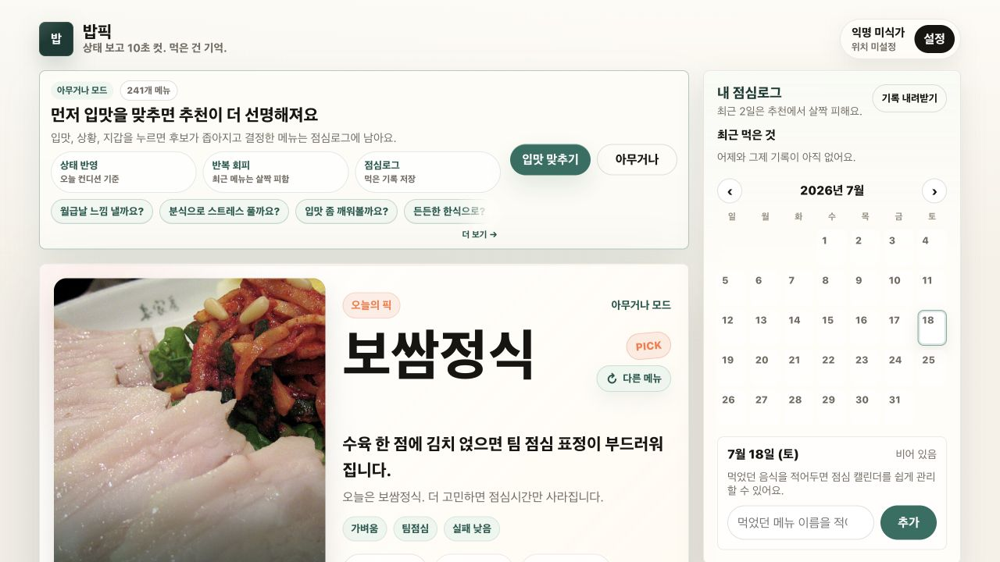

Future Apps
More practical tools are coming.
New apps will be added here with their product, support, and privacy pages.
WoozyLab
Every inconvenience can become the starting point for a more efficient system. WoozyLab makes apps that reduce repetitive friction in everyday tasks, from organizing photos and translating screens to automating work.
Explore WoozyLab apps and find their support and privacy information.
Review large photo sets quickly with keyboard shortcuts and organize them into folders on your Mac.
A macOS translation tool designed to help you understand only the part of the screen you need.
Future Apps
New apps will be added here with their product, support, and privacy pages.
Small tools, ready to use
Lightweight WoozyLab tools you can use directly in your browser without installing anything.

Lunch picker
Choose how you feel today, get a lunch suggestion, and save your final choice to a simple lunch log.
Open on the web